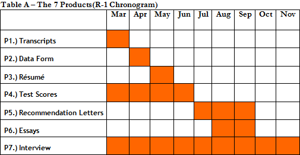

Nicholas, time to begin your Megaron Marathon. Time to take your first step towards your dream of attending an international top MBA program.
Let’s go. I am prepared for this Marathon. As a wise Chinese once said, “A journey of a thousand miles begins with the first step”, huh?
That’s the spirit. I appreciate the opportunity to guide you in such an important project. Some even say this will be the largest investment of time and money that they will do in all their lives.
A friend who is a Wharton MBA said, “Make sure you really want this, for it will be 2 years of your life that won’t go back. If you buy an apartment and regret, you can always pass it on. An MBA, on the other hand...” But I am the one to thank you for the chance of joining other marathoners who will pursue the next 42km together.
Thank you for your words.
A friend of mine who referred your work said, “There is not much secret - follow the steps of the Marathon. You need only the perseverance to bear a long way and your desire to dive into the process of self-awareness.”
9 in 10 of our students come because someone referred. We do not advertise anywhere. The work referred by former students is the only promotion of our work.
I will need your support, Megaron. I know that some schools’ admittance rate is below 10%.
I will need your support, Megaron. I know that some schools’ admittance rate is below 10%.
Yes, competition increases year after year. About 14 years ago, when I started, the pool of Brazilian applicants was relatively limited. To illustrate, last year, only among the consulting firms (McKinsey, BCG and Bain) we had 40 pre-MBA analysts applying for an international MBA.
I suppose you are not considering Latin America as a whole.
Right, I am talking exclusively about Brazilians.
So let’s not waste time, Megaron. (Laughing)
Let’s go.
I read your Megaron Pre Appplication. I already have an idea of the challenge ahead. Now I need to understand how your methodology, Megaron Marathon, can guide me in this complex process, MBA application.
Of course, but can I ask you a favor first? Before we go into details of our methodology, shall we recap what you read from Megaron Pre Application?
Sure, it is always good to review. I need to make sure that I will not make any mistake right at the beginning of this process.
The MBA Application
From what you read in the Megaron Pre Application, did you clearly identify what the schools demand from the applicants?
Yes, essentially, I will have to deliver 7 Products (7 P’s: Essays; Interviews; Recommendation Letters; Data Form; Résumé; Score Tests, GMAT & TOEFL; College Transcripts) to each school.
Correct, and while you accomplish the tasks related to the 42 Km, you will be guided on how to HOW TO build each of those 7 Products (7 P’s).
A friend said that the main challenge of this process is to manage “1001 activities.” What is the sequence to put together those 7 P’s? Is there an adequate order to manage each of the 7 activities?
The TIME factor plays a fundamental role in the correct articulation among the various parts o this process. The applicant must follow a proper sequence of actions. To prepare a dish, you need to follow a RECIPE, the right way to mix the several ingredients. You can’t just throw everything in a blender and press the button.
I read your COOKING METAPHOR. I liked the French entrecote metaphor.
So, you’ve seen. You need high quality ingredients, but the secret is how to use the ingredients to compose the whole. Otherwise, all restaurants would make excellent Entre-Cotes. The recipe will tell you the sequence to follow in the mixing of the ingredients. You will elaborate each of the 7 P’s considering the general view of the plate, in this case, your application.
I get it. The 42 Km and their respective 42 tasks will tell me the sequence to follow. However, concretely, what is the order that I must follow in order to build the 7 P’s?
Observe below (Table A) the months you have to focus on each of the 7 Products (7 P’s).

Well, I have barely begun this process, but I know that many people start this process by focusing exclusively on the GMAT and only when they get their 700+ will they pay attention to the so famous essays.
Unfortunately, this is a common decision among the less informed. It is the typical position of those who cannot see the relation among the various parts of this complex system. The applicant freezes before the complexity and devotes only to the simple part, the preparation for a test.
That is probably what I would do. I would order the GMAT Official Guide from Amazon and dive into it one week later.
This strategy can lead the applicant to make various mistakes in the time management of the process.
Well, I was thinking… I am 8 months from the deadlines (SEPTEMBER, Round-1), so I will not even think about essays for now. I must get rid of this GMAT issue as soon as possible.
I often say that the GMAT score is a commodity. The 700+ is a common element to most applicants admitted to top schools. What really makes your application package unique and likely to stand out among thousands is your ability to tell your stories. For more details, please revisit Km -2.
So that is why the essays are considered the most relevant part of a candidacy...
Definitely, the essays are a relevant part of your application, but I believe that it is during the interview that the school has the chance of understand your values, Nicholas. At this moment, they can see “beyond what a resume says.”
So what you are saying is that the interview is a decisive factor in the process… this is news to me. I have spoken to some admissions consultants, but none of them emphasized the importance of the interview. They told me a lot about how it is imperative to sell me through essays.
Indeed, until recently, the ability to put together a beautiful pack of essays could result in the difference between being admitted and being thrown in the basket of rejected applicants. It is no longer like that.